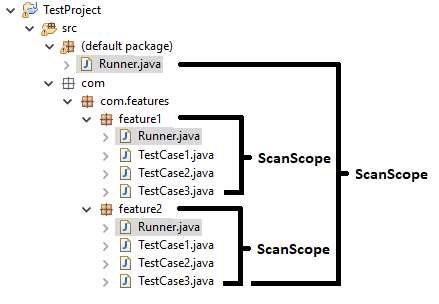

Test Suite & Test Runner¶
Scan Scope¶
ARTOS runner scans a section of Java project as an initial step of test suite execution. A class which initiates this scan is called the Runner. The Runner only scans withing same package or its child packages. A section of the Java project that will be scanned during the search is called a Scan Scope of the Runner.
The Runner¶
- A Runner is the entry point to a test suite.
- A Runner performs a scan within its scan scope in search of test cases (Classes annotated with
@TestCaseannotation). - A Runner at project root location [1] is called a Master Runner which has visibility of all test cases within a project.
- A Runner created within individual package is called a Feature Runner which has visibility inside its own package or its sub-packages.
- A test project can have more than one Runner.
| [1] | Project Root location |
- Non-Maven project root location =>
src. - Maven project root location =>
src/main/java. - Eclipse IDE root location is also known as “default package”.
Test Suite¶
- A Runner and test cases within Runner’s scan scope combined consists a Test Suite.
- A project contains as many test suites as number of test Runners.
- A test suite can not execute test cases outside its Runner’s scan scope
- Test suites may share one or more test cases.